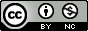

Pre svake odluke o deljenju podataka, potrebno je usaglasiti se sa uslovima koje propisuje finansijer projekta. U slučaju da ne postoje nikakva pravna i/ili etička ograničenja, i ukoliko su svi pravni uslovi ispunjeni u vezi sa autorskim pravima podataka, podaci se mogu postaviti u otvoreni pristup. Čak i kada su podaci u otvorenom pristupu, odnosno javnom domenu, kao autor(i) mogu se postaviti uslovi u vezi sa njihovim korišćenjem. Za ovo je najbolje koristiti Creative Commons licence - specijalni, šablonski pravni akt sačinjen od strane zajednice advokata kojim se definišu uslovi pod kojim korisnik podataka može da ih upotrebljava.
Često postoji nedoumica kako dodati licencu svom delu, ako su ispunjeni uslovi - to se radi kopiranjem odgovarajućeg teksta u sadržaj dela (na primer ako se licencira tekst ili rad). Sa podacima je nešto drugačija situacija, pa najčešće repozitorijumi imaju posebno polje u kome se autor opredeljuje za odgovarajuću licencu.
 |
Autorstvo |
Ova licenca dozvoljava distribuciju, remiks, preradu, kao i komercijalno korišćenje dela, ako/dok se pravilno navede ime autora. Ovo je najfleksibilnija licenca. Upotrebljava se kako bi se, u najvećoj meri, dozvolilo korišćenje dela. Detaljnije |
 |
Autorstvo-Deliti pod istim uslovima (Attribution-ShareAlike – CC BY-SA) |
Ova licenca dozvoljava remiks i preradu, kao i komercijalno korišćenje dela, ako se pravilno navodi ime autora i ako se prerada licencira pod istim uslovima. Ova licenca se često upoređuje sa tzv. “copyleft” licenciranjem slobodnog softvera ili softvera otvorenog koda. Sva dela nastala na osnovu dela sa ovom licencom, trebalo bi da budu licencirana istom licencom, koja, pored ostalog, dozvoljava komercijalno korišćenje. Ova licenca se upotrebljava u Vikipediji i sličnim projektima. Detaljnije |
| Autorstvo-Bez prerada (Attribution-NoDerivs – CC BY-ND) |
Ova licenca dozvoljava distribuciju, komercijalno i nekomercijalno korišćenje dela, ako se pravilno navede ime autora i ako se delo uopšte ne menja. Detaljnije | |
 |
Autorstvo-Nekomercijalno (Attribution-NonCommercial – CC BY-NC) |
Ova licenca dozvoljava remiks, prerade, kao i korišćenje dela na nekomercijalan način, ako se pravilno navede ime autora, s tim što prerade ne moraju biti licencirane ovom licencom. Detaljnije |
| Autorstvo-Nekomercijalno-Deliti pod istim uslovima (Attribution-NonCommercial-ShareAlike – CC BY-NC-SA) |
Ova licenca dozvoljava remiks i prerade, kao i nekomercijalno korišćenje dela, ako se pravilno navede ime autora i ako se prerada licencira pod istim uslovima. Detaljnije | |
| Autorstvo-Nekomercijalno-Bez prerada (Attribution-NonCommercial-NoDerivs – CC BY-NC-ND) |
Ova licenca je najstrožija CC licenca i dozvoljava samo preuzimanje i distribuciju dela, ako se pravilno navede ime autora, bez ikakvih promena dela i bez prava komercijalnog korišćenja dela. Detaljnije | |
 |
Javni domen (Public Domain - CC0) |
Javni domen obuhvata dela van zakonske zaštite. Delo se može naći u javnom domenu ukoliko, po svom karakteru, ne podleže zakonskoj zaštiti, istekom roka zakonske zaštite i odricanjem nosioca prava na delo, ako je to, u konkretnom slučaju, predviđeno zakonom. Detaljnije |
(adaptirano sa Creative Commons Srbije)
Uvek se možete obratiti bibliotekaru za pomoć pri izboru licence za vaše podatke. O softverskim licencama, pogledati sledeći članak.